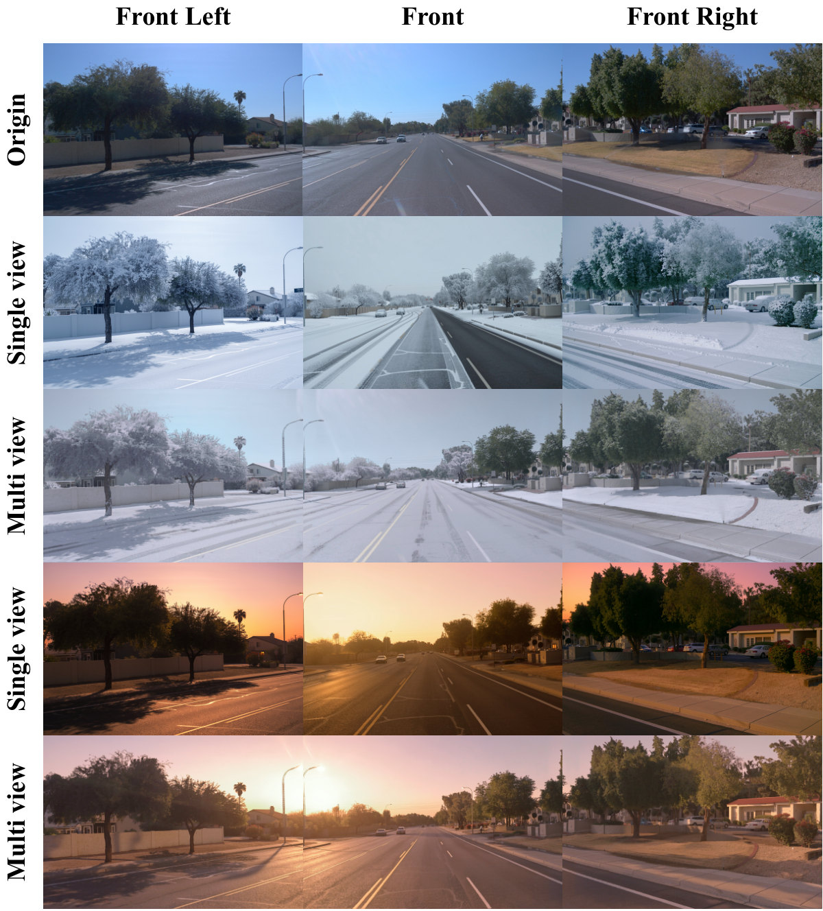
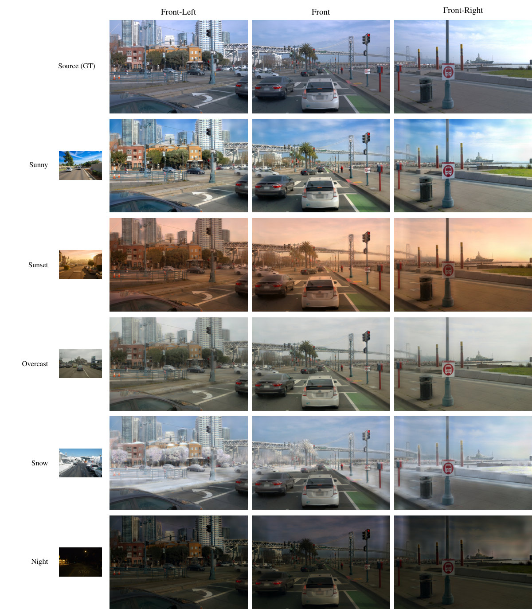
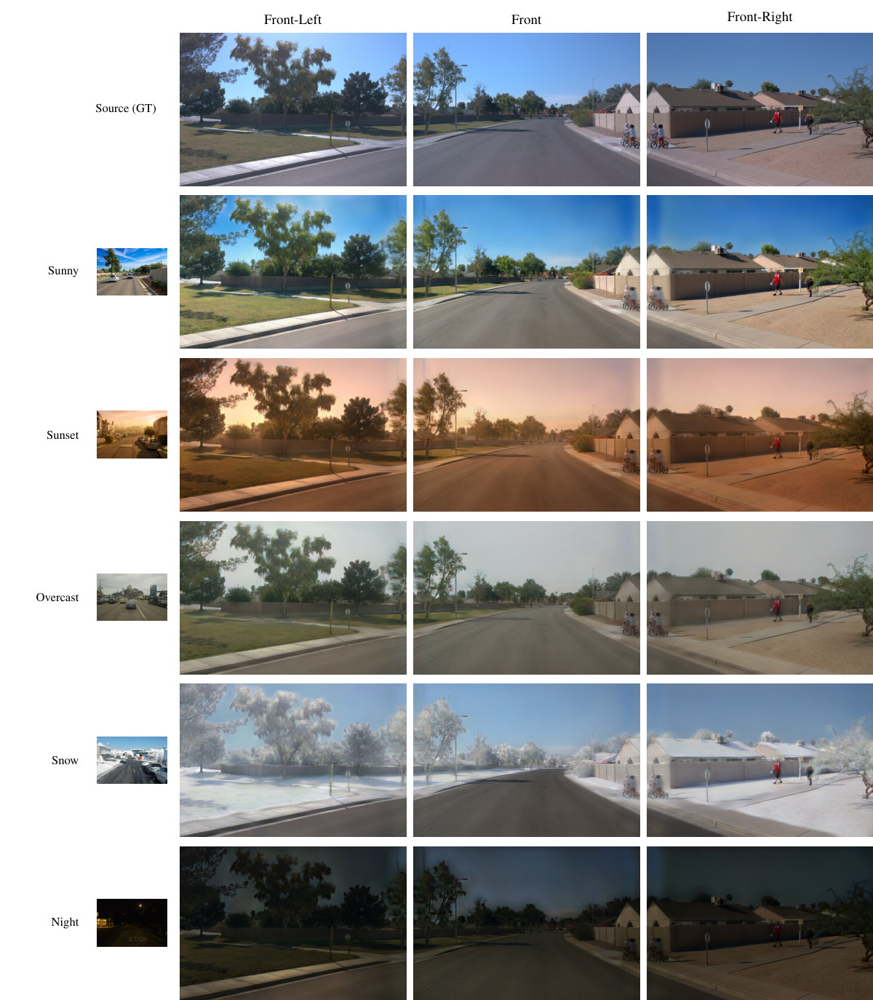
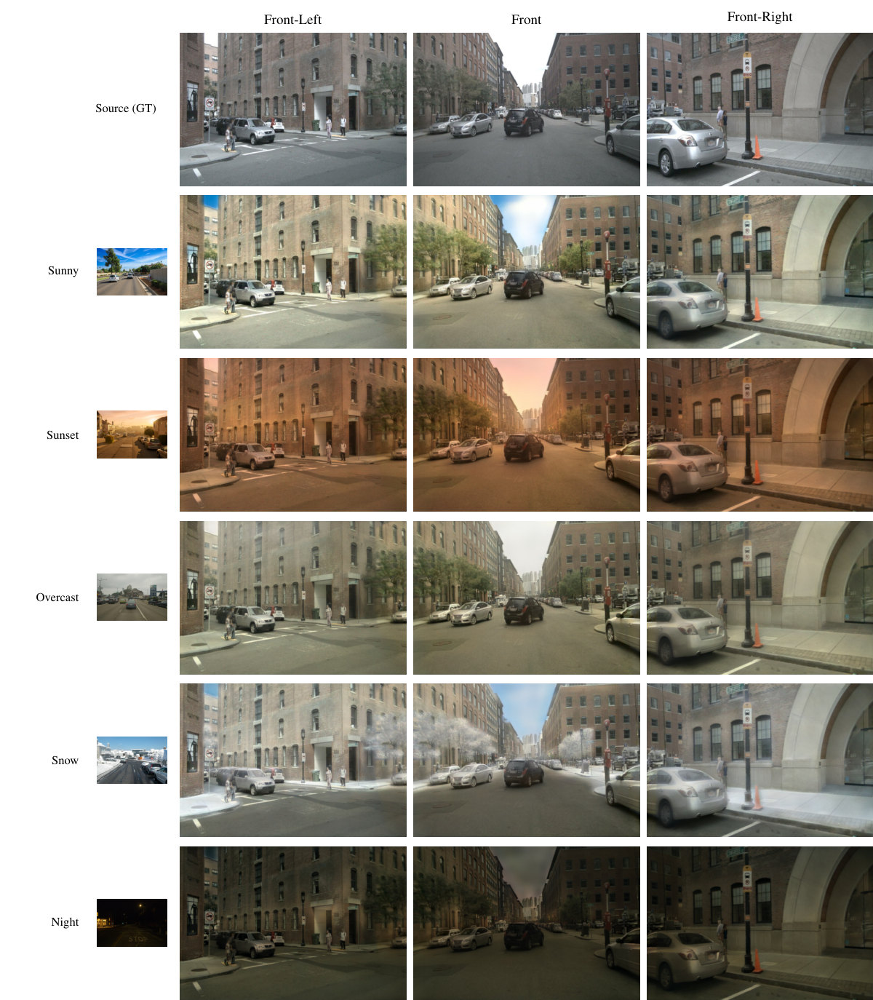
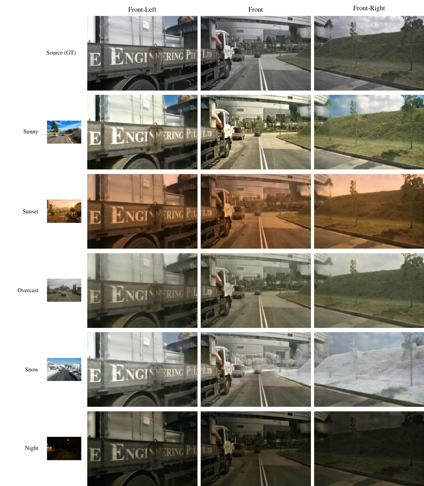

Feed-forward Gaussians
A frozen Pi3 backbone supplies depth and multi-scale features; a trainable Gaussian head builds the scene in a single pass, without per-scene optimization.
1 Beihang University (buaa.edu.cn)2 Carizon (www.carizon.com)3 Hangzhou Dianzi University (hdu.edu.cn)
PDF not yet available
Project demonstration videoOne reference image · all cameras
PROBLEM FORMULATION
Goal: adapt a feed-forward driving reconstruction to a reference appearance that was never observed at that location.
Driving simulation needs scenes under rain, snow, night, and other rare conditions. Feed-forward Gaussian reconstruction is fast, but it reproduces only the weather captured at recording time; re-observing every location under every condition is costly and often impossible. Editing each camera view independently with a diffusion model is slow and can produce appearances that disagree across overlapping views, while per-scene optimization is expensive.
AuraSplat reconstructs the scene once and transfers appearance from a reference image that may depict a different scene. A fine-tuned DINOv2 encoder turns the reference into a global appearance code. A small MLP converts this code into channel-wise modulation for the scene tokens and multiple color-decoder stages, and the decoder predicts bounded per-pixel RGB gain and bias maps. These maps update Gaussian colors while geometry, opacity, and camera pose stay fixed.

A frozen Pi3 backbone supplies depth and multi-scale features; a trainable Gaussian head builds the scene in a single pass, without per-scene optimization.
CLS tokens from several DINOv2 layers form a high-dimensional reference code that is shared by every camera and every Gaussian.
Reference-conditioned AdaLN and a color decoder predict gain and bias maps that adjust Gaussian colors while preserving scene geometry.
TWO-BRANCH DESIGN
A reconstruction branch builds the Gaussian scene; an appearance branch conditions its colors on one reference image.
Stage I · Reconstruction. The synchronized camera views enter a frozen Pi3 backbone, which provides per-view depth maps and multi-scale features. A trainable Gaussian head turns these outputs into a shared Gaussian scene.
Stage II · Appearance. A reference image, possibly from a different scene, is encoded by a fine-tuned DINOv2-S/14 into a global code. The code modulates scene content tokens through adaptive layer normalization and conditions multiple stages of a DPT-style color decoder. The decoder predicts pixel-aligned RGB gain and bias maps that update the colors of the Gaussians that generated each pixel.

Across many edited pairs, feature changes induced by each weather condition are correlated across scenes. This motivates conditioning on a global appearance code while keeping spatial source features to decide how the change is expressed locally.

Each Gaussian keeps its generating camera and pixel, and its source color. The predicted coefficients are bounded per channel. The final convolution is zero-initialized, so the branch starts from the source colors, and only RGB is updated.
Source images supervise reconstruction and preserve the captured appearance; edited targets supervise transfer. Targets come from independent per-view edits or from a shared cylindrical canvas built with LiDAR depth, which gives the diffusion model common context across overlapping cameras. References are synthesized from each target with simple augmentations, and training combines reconstruction and perceptual losses.

EXPERIMENTAL RESULTS

Waymo and nuScenes scenes under the same references; rows alternate source and reference-conditioned results.






Forward cameras per row; the reference used by each row appears in the left margin of the full panel.
Every scene and condition in one front-camera strip, plus a three-view video per scene. The sequences are per-frame reconstructions played back in order.
Each video plays the timeline once; the condition changes as time advances, from the source through clean (nuScenes) and the references across the forward cameras.
Reference-conditioned transfer is evaluated against diffusion-edited targets; the source render is the same reconstruction before transfer.
| Method | Output | PSNR ↑ | Edge ↑ | CLIP ↑ |
|---|---|---|---|---|
| Aligned reference · 518 × 350 | ||||
| WildSplatter | Source | 13.47 | 0.810 | 0.7689 |
| WildSplatter | Adapted | 18.47 | 0.498 | 0.7804 |
| Stylos | Source | 14.00 | 0.846 | 0.8403 |
| Stylos | Adapted | 18.77 | 0.547 | 0.8193 |
| AuraSplat | Source | 14.12 | 0.845 | 0.8384 |
| AuraSplat | Adapted | 23.34 | 0.766 | 0.9128 |
| Aligned reference · 256 × 256 | ||||
| Styl3R | Source | 12.55 | 0.748 | 0.8358 |
| Styl3R | Adapted | 17.75 | 0.828 | 0.8684 |
| Cross-scene reference · 518 × 350 | ||||
| AuraSplat | Adapted | 20.16 | 0.746 | 0.9015 |
Aligned reference: the current frame's edited target is the reference. Cross-scene: one fixed reference per weather from a different scene. AuraSplat keeps reconstruction quality (source row) and improves transfer fidelity over the baselines.
| Weather (frames) | AuraSplat PSNR | AuraSplat Edge | WildSplatter PSNR | WildSplatter Edge | Stylos PSNR | Stylos Edge | Styl3R PSNR | Styl3R Edge |
|---|---|---|---|---|---|---|---|---|
| Night (2017) | 24.47 | 0.580 | 21.62 | 0.261 | 20.88 | 0.351 | 19.84 | 0.654 |
| Sunset (1522) | 24.71 | 0.884 | 18.41 | 0.599 | 19.10 | 0.648 | 19.62 | 0.892 |
| Rain (1453) | 21.54 | 0.769 | 17.46 | 0.551 | 17.50 | 0.565 | 17.09 | 0.849 |
| Snow (1514) | 22.34 | 0.803 | 16.85 | 0.650 | 17.55 | 0.647 | 14.64 | 0.918 |
| Sunny (1370) | 23.17 | 0.866 | 16.77 | 0.510 | 18.01 | 0.595 | 16.72 | 0.893 |
| Weighted mean | 23.34 | 0.766 | 18.47 | 0.498 | 18.77 | 0.547 | 17.75 | 0.828 |
Each frame uses its own edited front target as reference and is scored against it. Styl3R renders at 256 × 256; the other methods at 518 × 350.
| Method | PSNR ↑ | SSIM ↑ | LPIPS ↓ |
|---|---|---|---|
| MVSplat | 22.04 | 0.68 | 0.34 |
| DepthSplat | 23.86 | 0.70 | 0.31 |
| UniSplat | 25.98 | 0.76 | 0.24 |
| AuraSplat | 25.45 | 0.77 | 0.23 |
Original-appearance rendering at several camera poses from a subsequent timestamp, following the UniSplat protocol; baseline numbers are reported by UniSplat.
IMPLEMENTATION & EVALUATION
The synchronized cameras enter a frozen Pi3 backbone. A trainable Gaussian head builds the scene. Original-appearance reconstruction reaches 25.45 dB PSNR, 0.77 SSIM, and 0.23 LPIPS on Waymo.
A fine-tuned DINOv2-S/14 produces a 1536-d code from layers {2, 5, 8, 11}. The branch contains an 11.58 M conditioning MLP, a 9.55 M color decoder, 4.20 M content projections, and a 0.79 M reference projection.
The model has 1,148.88 M parameters, 175.46 M trainable, and trains for five epochs. On an H20-3e GPU the full pipeline takes 0.64–0.68 s per appearance condition at batch size one.
Transfer numbers use 7,876 evaluation samples from 202 Waymo scenes, scored on the front camera at 518 × 350 against diffusion-edited targets.
Read the pipeline, modulation, and training details.
LIMITATIONS & DESIGN CHOICES
Appearance generalization follows the training distribution. Updates are RGB-only, which gives global reference control without explicit material or spatially varying illumination control. Dynamic objects depend on reconstruction and diffusion-target quality, and novel views can expose reconstruction gaps.
Moving objects inherit errors from the reconstruction and from the edited targets, and the current update is global: one reference sets the appearance of the whole scene, so separate objects or regions cannot receive different appearances.
Different same-weather references produce different outputs. Different references shift tone and brightness, but the variation stays well below the change from the source appearance; the weather class dominates.
Rendering far from the input poses, or filling regions that were never observed, can expose reconstruction gaps that appearance transfer cannot repair.
Short answers about the protocol.
No. Reconstruction and appearance transfer run feed-forward.
No. The reference can come from a different scene. The transfer still follows its appearance, although the match can be less precise than when the reference shares the scene.
AURASPLAT / TECHNICAL SUMMARY
AuraSplat
Back to top